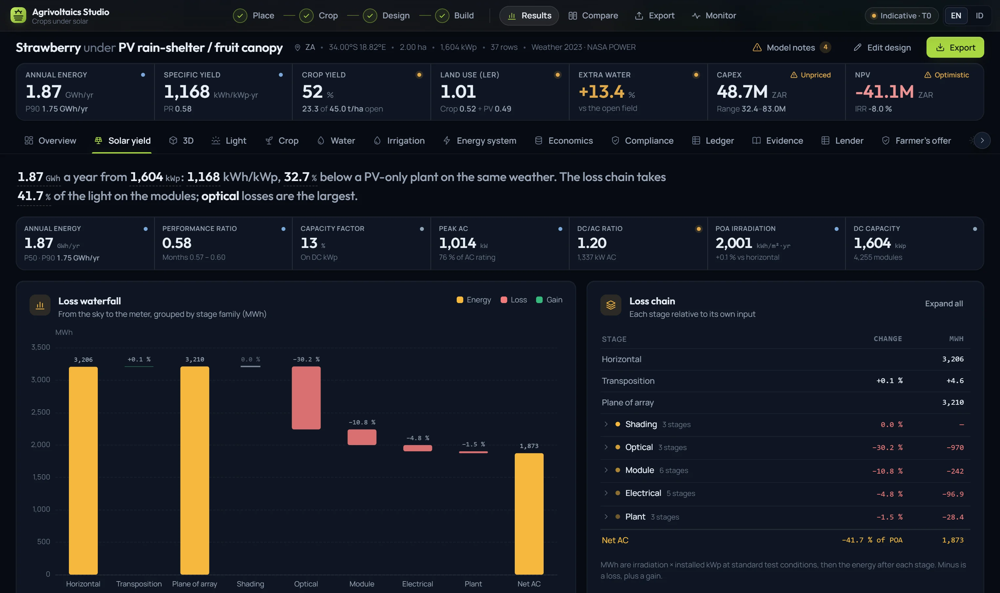
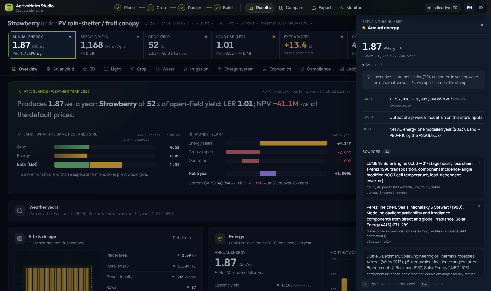

How the studio computes a field
Light first. From every point on the ground, the share of sky the modules leave open decides the diffuse light that point receives. The figure walks a probe across one row pitch and counts it.
- Engine
- 13 stages
- Time step
- 1 h · 8,760 h
- Light tier
- T0, live
- Revised
- October 2026
A run couples five models on one weather year: light on the ground from a two-dimensional sky view factor and the projected shadow of every row; energy from an hourly loss chain; crop growth from a radiation-use model driven by the light in each zone; water from the FAO-56 root-zone balance; and land use as the land equivalent ratio. Each output carries its basis and a band, and the engine is re-run against published agrivoltaic trials.
This note gives the governing equations, the assumptions that limit them, and what is not yet modelled.
Photosynthetically active radiation is taken from global horizontal irradiance with a conversion factor that rises from clear to overcast skies, then split into beam and diffuse parts [1].
The sky is treated as isotropic. A ground point sees the fraction of it the rows leave open, by the crossed-strings rule summed over every row of the periodic array:
Each module edge is projected onto the ground along the sun's profile direction; a bin inside that interval, modulo the pitch, is in shadow. Support posts thin both components:
- s(x)1 in sun, the module transmittance τm in shadow; semi-transparent modules also pass τm of the sky they block
- n, b, Hpost density per m², post width, post height
- εsolar elevation; b⊥ is the post width seen from the sun's azimuth
Covered designs add the film: its cycle-mean transmittance, aged over one replacement life, with a haze share of the beam scattered into diffuse light.
1.1 The edge of a finite parcel
Equation (2) describes an interior row with identical neighbours on both sides. On a small site the outer rows see more sky. Against a three-dimensional ray trace of a one-hectare parcel:
Internal measurement, 23 September 2026.
The studio's light map is labelled "edge rows not modelled" where it is read. A finite-parcel tier that ray-casts the real parcel is in build.
| Tier | Method | Output | Status |
|---|---|---|---|
| T0 | 2-D sky view factorInterior row, tiled across the parcel; in the browser | PAR and DLI by zone and month | live |
| T1 | Finite-parcel ray castReal parcel geometry; in a browser worker | Annual PAR at 0.25 m; P50–P90 by zone | in build |
| T2 | Hosted ray-traced solverServer-side | The tier an engineered report would cite | planned |
Irradiance is transposed to the plane of the array with the Perez model [2], and incidence-angle losses are applied per component (beam, sky diffuse and ground-reflected) with equivalent angles for the diffuse parts [3]. Cell temperature, DC and AC conversion follow. Where reanalysis diffuse is implausible it is re-split with the Erbs correlation [4], and every weather year is graded A–D before use.
Bifacial rear-side gain is a port of the infinite-sheds model, with ground albedo linked to the crop. It is on for the vertical fence and optional for fixed and tracking arrays.

Biomass accumulates with the SIMPLE crop model [5], driven by the radiation each zone receives:
The water-stress term is not estimated separately: fWater is the FAO-56 stress coefficient Ks of section 4, so crop and water share one root-zone balance. Each zone's diffuse light is carried into a diffuse-light efficiency term, since a shaded canopy uses scattered light better.
3.1 Evidence labels
Every crop carries the weaker of two labels: its shade-response prior and its crop-model parameters. Most parameters are analogues, and the library says so. Tropical sites are capped at low until South-East Asian field data exists. Behind the priors sit 296 trial observations from 54 sources; they are shown beside the result and do not yet move the headline yield.
- Strong
- 0
- Moderate
- 1Soybean
- Low
- 9Dry bean (common bean), Green bean (snap bean), Groundnut (peanut), Maize, Potato, Rice (aerobic, drip), Sweet corn, Tomato, Wheat
- None
- 25
When a design shades a crop beyond the range its evidence covers, the yield is flagged as outside the tested range, on the tab and in the points to check.
Reference evapotranspiration follows FAO-56 Penman–Monteith with a dual crop coefficient, and root-zone depletion is stepped daily [6]:
Runoff uses the daily curve number [7]. Drip irrigation refills the root zone to field capacity once depletion passes the readily available water, and mass is conserved exactly over the season. A covered design sheds the rain, so everything the crop drinks under it is irrigation.
The land equivalent ratio compares the shared field with the two separate uses it replaces. The parcel, not the cropped area, is the land basis, so land lost to posts and lanes counts against the crop exactly once.
EPV is a reference ground-mount plant on the same parcel and weather, at 1.1 MWp per hectare.
| Parcel · cropped | 1.0 ha · 0.9 ha |
| Crop: 0.9 ha × 4.4 t/ha against 5.5 t/ha open | RYcrop = 0.720 |
| Energy: 820 MWh against 1,200 MWh | RYelec = 0.683 |
| Land equivalent ratio | 1.403 |
No number is printed without its basis. Selecting any figure in the studio opens its record: the exact value, the band around it, the basis it rests on, a note and every source. Bands over weather come from fifteen real years run one by one and are reported as P10, P50 and P90.

- ModelledOutput of a physical model run on the site's inputs.
- DerivedComputed from other results.
- LiteratureTaken from a published reference, with the citation.
- AssumedNot verified from a primary source, and labelled as such.
- InputEntered by the user: a price, a rate, the farmer's own yield.
The engine is re-run on published agrivoltaic trials in Germany, Sweden and Indonesia [8–10], and every modelled value is set against its measurement. The scorecard ships inside the product, failing rows first.
Three weather sources are wired, each labelled with whether a commercial project may use it before the run starts.
| Source | Data | Commercial use | In the studio |
|---|---|---|---|
| Open-Meteo · ERA5 | Hourly reanalysis | free API: no | Default |
| NASA POWER | Hourly irradiance and weather | allowed | Selectable |
| PVGIS · SARAH-3 | Hourly, satellite-derived | allowed | Selectable |
- Spitters CJT, Toussaint HAJM, Goudriaan J (1986). Separating the diffuse and direct component of global radiation and its implications for modeling canopy photosynthesis. Part I. Agricultural and Forest Meteorology 38:217–229.
- Perez R, Ineichen P, Seals R, Michalsky J, Stewart R (1990). Modeling daylight availability and irradiance components from direct and global irradiance. Solar Energy 44(5):271–289.
- Duffie JA, Beckman WA (2013). Solar Engineering of Thermal Processes, 4th ed. Wiley. §5.4, equivalent incidence angles.
- Erbs DG, Klein SA, Duffie JA (1982). Estimation of the diffuse radiation fraction for hourly, daily and monthly-average global radiation. Solar Energy 28(4):293–302.
- Zhao C, Liu B, Xiao L, Hoogenboom G, Boote KJ, Kassie BT et al. (2019). A SIMPLE crop model. European Journal of Agronomy 104:97–106. doi:10.1016/j.eja.2019.01.009
- Allen RG, Pereira LS, Raes D, Smith M (1998). Crop evapotranspiration: guidelines for computing crop water requirements. FAO Irrigation and Drainage Paper 56. FAO, Rome. Eqs. 82–88.
- USDA NRCS. National Engineering Handbook, Part 630 Hydrology, ch. 9: Hydrologic soil-cover complexes.
- Weselek A, Bauerle A, Hartung J, Zikeli S, Lewandowski I, Högy P (2021). Agrivoltaic system impacts on microclimate and yield of different crops within an organic crop rotation in a temperate climate. Agronomy for Sustainable Development 41:59. doi:10.1007/s13593-021-00714-y
- Campana PE, Stridh B, Hörndahl T et al. (2024). Experimental results, integrated model validation, and economic aspects of agrivoltaic systems at northern latitudes. Journal of Cleaner Production 437:140235. doi:10.1016/j.jclepro.2023.140235
- Yoon S, Kim M, Han S, Lee J-Y (2026). Agrivoltaics in the tropics: soybean yield stability and microclimate buffering across wet and dry seasons. Agronomy 16(1):116. doi:10.3390/agronomy16010116
- pvlib python, version 0.15.2: the reference implementation for the step check (sun position, incidence, transposition, incidence-angle modifier, cell temperature, DC and AC power) on four reference systems.
Audit a run with us
We open a demo parcel, the engine stages, the evidence records and the scorecard, and take the questions a reviewing engineer would ask.